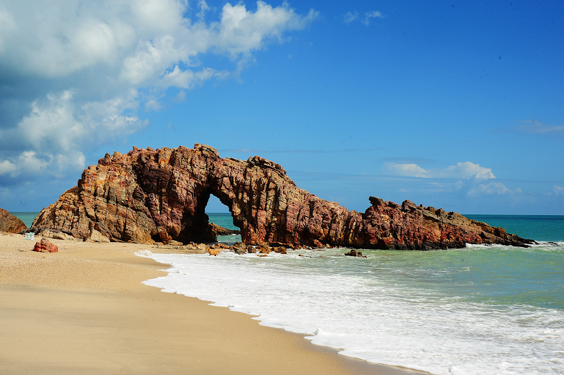
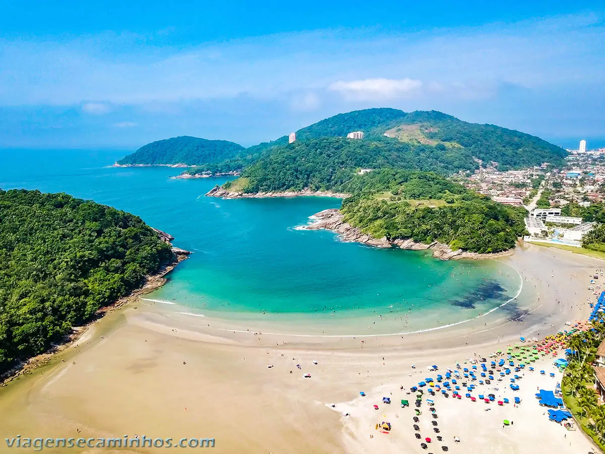
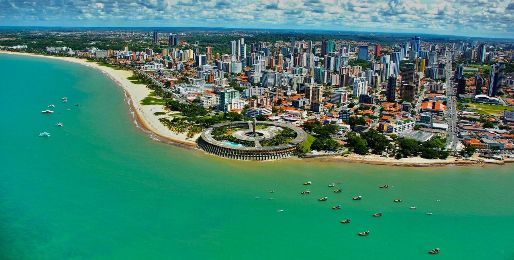
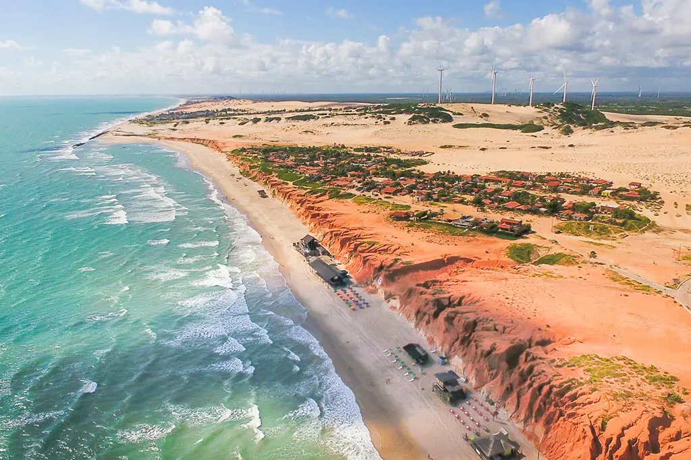

Praias do Brasil
O Brasil é um dos países tropicais conhecidos pelas praias mais bonitas do planeta. Confira as melhores praias
para esse verão.
Jericoacoara

Jericoacoara é uma praia localizada na vila homônima, no município de Jijoca de Jericoacoara, no estado do
Ceará, no Brasil. Está localizada a 295 km a oeste da capital do estado, Fortaleza. Foi eleita em 1994 pelo
jornal estadunidense The Washington Post uma das dez praias mais bonitas do planeta.Em 2014, foi eleita pelo
Huffington Post a quarta melhor praia da Terra.É um dos locais mais frequentados por praticantes de
windsurfe no país. A praia é parte integrante do Parque Nacional de Jericoacoara.
Atrações:
- Pedra Furada.
- Duna do por do Sol.
- Igreja Nossa Senhora da Consolação.
- Serrote.
- Farol de Jericoacoara.
- Campo das Dunas.
Barra da Tijuca

A Praia da Barra da Tijuca é a principal praia da região e estende-se ao longo da Avenida Lúcio Costa até o Recreio dos Bandeirantes. É a maior praia do estado do Rio de Janeiro,[11] com dezoito quilômetros de comprimento. A partir da Avenida Ayrton Senna, a praia não possui calçadão, por ser uma região de preservação ambiental. Tem ondas fortes, tubulares e muito boas para a prática do Surf e do Bodyboarding. Nela são realizadas diversas etapas de campeonatos brasileiros e até mundiais. Suas areias são brancas e finas.
Atrações:
- Barra Shopping
- New York City Center
- VilliageMall
- Rio Design barra
Guarujá

A maior praia da cidade, com 5,6 km de extensão, tem infinitas opções recreativas em sua orla: restaurantes, o maior aquário da américa do sul, a maior concentração de hotéis da cidade, os principais eventos do verão, além da praia em si, que é linda e possui águas claras e mar agitado.
Atrações:
- Acqua Mundo
- Mirante do morro de campina
- Praia das pitangueiras
- Praia da Enseada
João Pessoa

A coloração é esverdeada nas áreas mais profundas e ganha um tom mais escuro onde as ondas arrebentam. Na orla urbana de Jampa,destaca-se a Praia de Tambaú, movimentada dia e noite, com grande infraestrutura e ampla faixa de areia .
Atrações
- Praia de Tambaú
- MAP-Mercado de Artesanato
- Praia Barrra De Gramame Norte
- Centro Cultura São Francisco
Canoa Quebrada

A praia de Canoa Quebrada é cercada por falésias avermelhadas e imensas dunas de areia. O visual é lindo e muitos turistas visitam a praia principalmente para ver essa beleza natural do litoral de Aracati. O Pôr do Sol de Canoa é um espetáculo místico que pode ser apreciado do alto da maior duna de Canoa Quebrada.
Atrações:
- Barraca de Praia e Restaurante
- Pousada Tranquilândia
- La Dolce Vita I Hotel & Pusada
- Hotel E Pousada Tatajuba